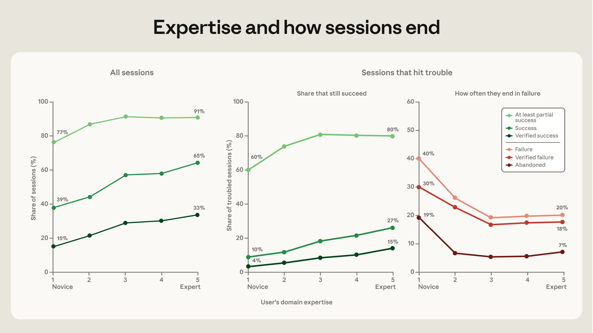
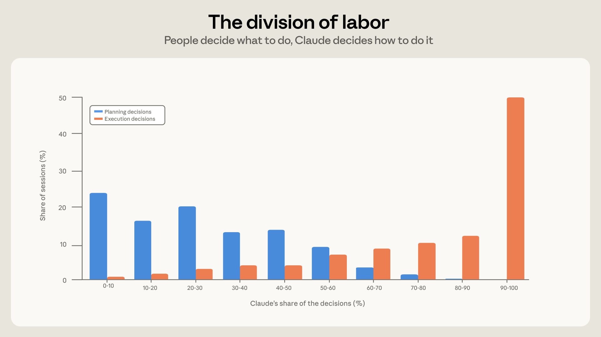
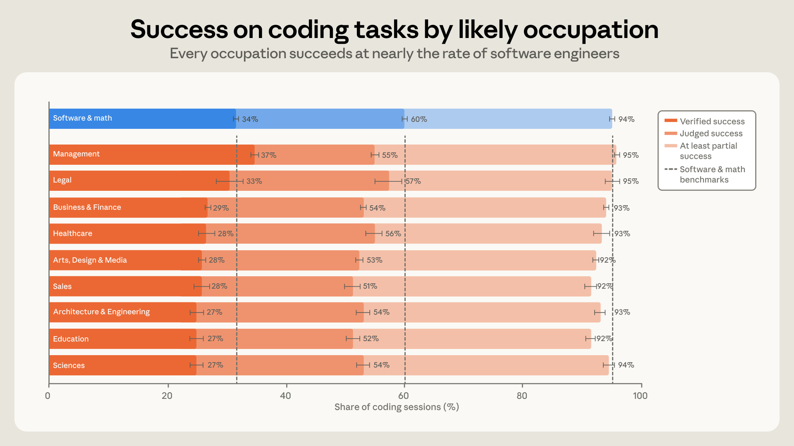

앤트로픽이 클로드 코드 세션 약 40만 건을 분석했습니다. 사람은 무엇을 만들지 70%를 정하고, 에이전트는 어떻게 만들지 80%를 정했습니다.
성공률은 코딩 실력이 아니라 도메인 전문성에 비례했습니다. 검증된 성공은 초보 15%, 전문가 33%였습니다.
코딩 배경은 점점 덜 중요해집니다. 직업 무관하게 성공했고, 관리직이 소프트웨어 직군보다 검증 성공률이 높았습니다.
AI에게 어떻게 만들지를 맡기셨습니까?
그렇다면 무엇을 만들지는 당신 몫입니다.
성과는 바로 거기서 갈립니다.
많은 리더가 AI 코딩을 개발자의 일로 봅니다. 그래서 우리 팀은 코딩을 모르니 멀다고 여깁니다. 이 연구는 그 전제를 흔듭니다.
앤트로픽이 실제 세션 40만 건을 뜯어봤습니다. 성공을 가른 건 코딩 실력이 아니었습니다. 사용자가 가진 도메인 전문성이었습니다.
이 글은 AI 에이전트를 팀에 들이려는 비개발자 리더를 위한 것입니다. 누구에게 무엇을 맡길지, 그 판단의 기준을 바꿉니다.
AI 코딩 에이전트가 빠르게 업무에 들어옵니다. 코드를 짜는 일을 넘어 소프트웨어를 돌리고 데이터를 분석합니다. 비개발 직군도 이 도구를 씁니다.
그동안 질문은 모델이 얼마나 똑똑한가였습니다. 이 연구는 질문을 바꿉니다. 사람이 무엇을 가져오는가가 성패를 가릅니다.
리더에게 이건 채용과 배치의 문제입니다. 코딩 자격증이 아니라 문제를 정의하는 능력이 성과를 만듭니다. 전문성이 없으면 좋은 도구도 헛돕니다.
첫째, 분업이 뚜렷합니다. 사람은 무엇을, 에이전트는 어떻게. 앤트로픽은 세션마다 결정을 두 종류로 나눴습니다. 계획 결정은 무엇을 만들지, 어떤 방향으로 갈지, 무엇이 완료인지입니다. 실행 결정은 어떤 파일을 고치고 어떤 코드를 쓸지입니다. 사람은 계획 결정의 약 70%를 내렸습니다. 실행 결정은 약 20%만 내렸고, 나머지 80%는 클로드가 맡았습니다.

이 분업의 의미는 분명합니다. 무엇을 만들지는 여전히 사람이 정합니다. 어떻게 만들지는 에이전트에게 넘어갑니다. 그래서 좋은 질문과 명확한 완료 기준을 가진 사람이 유리합니다.
둘째, 성공은 코딩 실력이 아니라 도메인 전문성에 비례합니다. 앤트로픽은 사용자 전문성을 초보부터 전문가까지 5단계로 매겼습니다. 코딩 활동이 아니라 지시의 정확성, 검증 요청, 교정 방식으로 판단했습니다. 검증된 성공은 초보 15%, 중급 이상 28~33%였습니다. 적어도 부분 성공한 비율은 초보 77%, 중급 이상 91~92%였습니다. 가장 큰 도약은 초보에서 중급으로 넘어가는 구간에 몰렸습니다.

셋째, 코딩 배경이 없어도 성공합니다. 앤트로픽은 파일 구조와 어휘로 사용자의 직업을 추정했습니다. 코딩 활동 자체는 직업 판단에서 제외했습니다. 코드를 만든 세션에서 10대 직업 모두 소프트웨어 직군과 7%p 이내였습니다. 오히려 관리직이 검증 성공률 37%로 가장 높았습니다. 소프트웨어 직군은 34%였습니다. 법률, 비즈니스, 의료, 예술 직군도 비슷하게 성공했습니다.

넷째, 일의 성격이 바뀌고 가치가 오릅니다. 2025년 10월부터 2026년 4월까지 작업 구성이 변했습니다. 망가진 코드를 고치는 세션은 33%에서 19%로 줄었습니다. 소프트웨어를 운영하는 세션은 14%에서 21%로 늘었습니다. 글쓰기와 데이터 분석은 약 10%에서 20%로 두 배가 됐습니다. 평균 세션의 추정 가치는 7개월 동안 27% 올랐습니다. 빌드, 운영, 수정 작업은 각각 약 43%, 34%, 32% 더 가치가 커졌습니다.

리더에게 이 변화는 신호입니다. 일이 버그 수정에서 운영과 분석으로 옮겨갑니다. 코드를 짜는 손보다 무엇을 분석하고 운영할지 아는 판단이 더 중요해집니다. 그 판단은 도메인을 아는 사람에게서 나옵니다.
전문가 세션은 클로드를 더 많이 부립니다. 초보 세션은 프롬프트당 클로드 행동이 약 5개, 출력이 600단어였습니다. 전문가 세션은 행동 12개, 출력 3,200단어로 두 배가 넘었습니다. 잘 아는 사람이 에이전트를 더 멀리까지 끌고 갑니다.
관리직과 비즈니스 직군도 소프트웨어 직군만큼 성공했습니다. 도메인을 잘 아는 사람이 작은 자동화부터 직접 만들게 하십시오. 코딩 자격을 자격 요건으로 두지 마십시오. (1시간)
우리 팀에서 사람이 반복하는 수작업 5가지를 적어 주세요. 각 작업마다 그 일을 가장 잘 아는 담당자, 자동화로 줄일 시간, AI 에이전트에게 맡길 수 있는 부분을 표로 정리해 주세요. 코딩 경험이 없어도 시작할 수 있는 순서로 우선순위를 매겨 주세요.
성과는 계획 결정에서 갈립니다. 담당자가 목표와 완료 기준을 한 문장으로 못 쓰면 에이전트도 헤맵니다. 작업 전 목표, 제약, 완료 조건을 적는 한 장 양식을 도입하십시오. (30분)
곤경에 빠진 세션에서 전문가의 포기율은 7%, 초보는 19%였습니다. 차이는 결과를 확인하고 교정하는 습관에서 나왔습니다. 결과를 그대로 받지 말고 테스트와 점검을 기본 단계로 넣으십시오. (30분)
분류기가 추정한 값입니다. 전문성과 직업, 성공 여부는 모델이 대화 기록을 읽고 매긴 추정입니다. 실제와 다를 수 있으니 경향으로 받아들이십시오.
세션 이후 결과는 측정하지 못합니다. 연구는 세션 안에서만 성공을 봤습니다. 실제 업무에 쓰였는지, 오래 유지됐는지는 담지 못했습니다.
클로드 코드 사용자 표본입니다. 이미 이 도구를 쓰는 사람들의 데이터입니다. 전체 직장인으로 일반화할 때는 조심해야 합니다.
전문성은 코딩이 아니라 도메인입니다. 도구를 깐다고 성과가 나지 않습니다. 문제를 정의하고 검증하는 사람이 있어야 효과가 납니다.
AI 코딩의 성패는 코딩 실력이 아니라 도메인 전문성이 가릅니다. 무엇을 만들지 정의하고 결과를 검증하는 사람에게 에이전트를 쥐여 주십시오.
에이전트 코딩(Agentic Coding): AI가 코드를 직접 쓰고, 명령을 실행하고, 결과를 확인하며 작업을 이어가는 방식입니다. 사람은 방향을 정하고 에이전트가 실행합니다.
도메인 전문성(Domain Expertise): 코딩 실력이 아니라 자기 분야 문제를 깊이 아는 능력입니다. 무엇이 옳은 결과인지 판단하는 힘입니다.
검증된 성공(Verified Success): 테스트 통과나 커밋, 사용자 확인 같은 명확한 증거가 있는 성공입니다. 가장 엄격한 성공 기준입니다.
계획 결정 / 실행 결정: 계획은 무엇을 만들지, 실행은 어떻게 만들지입니다. 연구는 둘을 나눠 누가 결정했는지 셌습니다.
- Hitzig, Z., Massenkoff, M., Lyubich, E., Zhang, S., Heller, R., & McCrory, P. (2026, June). Agentic Coding and Persistent Returns to Expertise [Research]. Anthropic. (원문 보기 ↗)